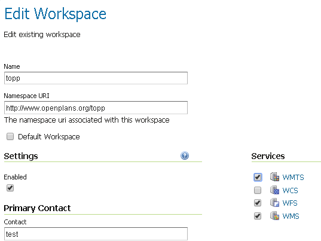
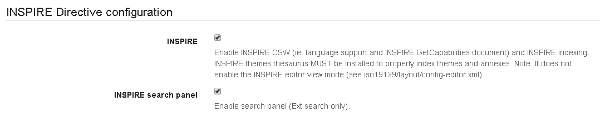
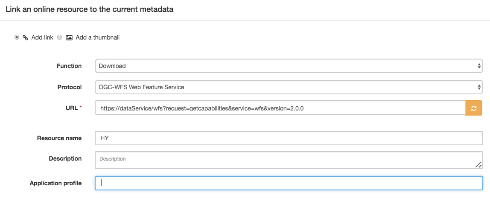

Учебное пособие по настройке службы загрузки INSPIRE на основе WFS с помощью GeoServer¶
This tutorial shows how one can set up a combination of GeoNetwork and GeoServer to provide download services following technical guidelines for download services.
Обратите внимание, что технические рекомендации разрешают использовать как Atom/OpenSearch, так и `WFS.<http://www.opengeospatial.org/standards/wfs> `_. В этом руководстве описывается, как настроить службу загрузки с помощью WFS.
Геосервер¶
Для поддержки моделей данных INSPIRE подключаемый модуль геосервера `"appschema"<http://docs.geoserver.org/stable/en/user/data/app-schema/> `_ должен быть установлен. Настройка поддержки схемы приложения в GeoServer не является целью этого руководства. Поддержка Appschema для INSPIRE прекрасно задокументирована Маркусом Сеном.<https://data.gov.uk/sites/default/files/library/INSPIREWFSCookbook_v1.0.pdf> `_. Еще один ценный ресурс доступен на сайте `geosolutions<http://www.geo-solutions.it/blog/inspire-support-in-geoserver-made-easy-with-hale/> `_. В этом руководстве мы сосредоточимся на аспектах метаданных службы загрузки WFS.
Загрузите и установите расширение GeoServer INSPIRE, как описано в разделе «Установка расширения inspire».<http://docs.geoserver.org/latest/en/user/extensions/inspire/installing.html> `_
Create at least one workspace per data model. On workspace properties activate «Settings» and set the selected service type (WFS).
В настройках WFS выберите новую рабочую область и заполните форму (пока оставьте URL-адрес метаданных службы пустым), как описано в разделе «Использование расширения inspire».<http://docs.geoserver.org/latest/en/user/extensions/inspire/using.html#inspire-using> `_. Если нового рабочего пространства нет в раскрывающемся списке, вернитесь к предыдущему шагу и убедитесь, что для рабочего пространства активированы «Настройки». Если поля INSPIRE не отображаются, убедитесь, что расширение INSPIRE установлено правильно.

Создайте типы функций в соответствии с документацией по схеме приложения.
Геосеть¶
When deploying GeoNetwork, make sure the GEMET thesauri are loaded and activate the INSPIRE editor as described in inspire documentation.
В Admin > Settings активируйте расширение INSPIRE.
Для каждого набора данных, который вы собираетесь опубликовать, создайте запись iso19115, используя шаблон INSPIRE. Свяжите каждую запись со службой загрузки, созданной на геосервере: например, https://{url}/geoserver/{workspace}/ows?request=getcapabilities&service=wfs&version=2.0.0.
Создайте сборщик OGC, способный извлекать запись метаданных для службы (iso19119) из WFS. Запустите харвестер и запишите идентификатор метаданных созданного сервиса.
Вернуться к Геосерверу¶
Для каждого уровня добавьте URL-адрес метаданных в конфигурацию уровня типа application/vnd.ogc.csw.GetRecordByIdResponse_xml.
В рабочей области WFS-settings > INSPIRE добавьте ссылку на метаданные службы. В отличие от WMS, WFS не связывает тип объекта (уровень) с метаданными, вместо этого ссылки на метаданные набора данных должны быть добавлены как часть расширенных возможностей INSPIRE.
Проверить реализацию¶
Если вы используете указанную выше настройку онлайн, вы можете использовать валидатор Pilot JRC INSPIRE.<http://inspire-geoportal.ec.europa.eu/validator2/> `_. Если описанная выше установка выполняется локально, вы можете использовать `Esdin Test Framework<https://github.com/Geonovum/etf-test-projects-inspire> `_ для проверки установки INSPIRE.

Частое выполнение теста во время разработки помогает выявить проблемы на ранней стадии.